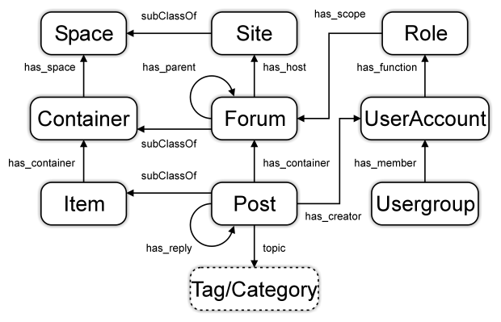

ActivityStreams has defined and standardized a set of Social concepts, that has given rise to the Microblogging-oriented Fediverse we have today. It worked great to integrate diverse microblogging apps, model lightweight discussion threads, give Likes and Boosts, etc. It does not work so great when squeezing all kinds of entirely different apps into this business domain to facilitate interoperability.
Threat: Stretching the applicability of currently available Social concepts too much results in semantic incompatibilities
To a man with only a hammer, everything looks like a nail. “Yeah, this must be an as:Note if you want to federate.” and later on we’ll find that “Hey, my as:Note is not your as:Note.” and clients will have a hard time making sense of it all. Additionally:
Threat: Sticking to mostly Microblogging domain, not benefiting from Linked Data versatility, means we are easily disrupted.
One new ActivityStreams type we are starting to explore and adopt is the as:Group and there is not yet consensus how it should be implemented in a compatible way.
But what I notice is that - in many cases - it is more than merely a Group actor we are trying to model. It is part of a larger domain.
Observation: We are trying to model Community domains instead of merely Groups.
Communities are everywhere in our society and we all participate in many different ones at the same time. They are more than simply groups, and often have intricate and complex social organization structures.
This forum, and all Discourse forums for that matter, also define a Community, which consists of the forum members. Many other softwares (like e.g. the new and innovative PubPub Collaborative Publishing platform) also are community oriented. Are the new Fediverse applications that investigate using as:Group type also actually defining broader community concepts? If they do then each of these projects has at least one thing in common. They all:
- Reinvent the wheel of how a Community should be defined
And as a result all of these will be incompatible with each other, creating community islands that may never share features and members of other communities / community-based softwares. Where they do share, the integrations will be bolt-ons via bridges and adapters.
As part of my Fediverse advocacy and setting up Fediverse Futures initiative I was making the case to both Discourse and PubPub that Community Has No Boundary. See the discussions I started for more background:
But I now realize that I was advocating on an application-by-application basis, and this is a common issue. The question is, shouldn’t we avoid all this duplicate work and the incompatibility?
Opportunity: Standardize a set of common Community concepts as an extension of ActivityStreams / ActivityPub.
Besides talking community there are currently many discussion on adopting more powerful Moderation tools for Fediverse instances. The outcome of these discussion may lead to the adoption of one or more Fediverse Enhancement Proposals.
Question: If Moderation FEP’s are adopted, should they be based on current ActivityStreams model, or part of a Community domain?
Standardizing a Community domain?
There are many ways to approach defining Community in a standard way. The definition can focus on just the organizational aspects, or on the complete model of how communities are usually represented in online web interfaces. I don’t know what the best approach is in this regard, though I am in favor to focus on organizational structures first.
Discussion topic: Do you see the merits in defining a Community domain, and if so then what should it contain?
I will present some prior work I found that may inspire the discussion.
Sociocracy 3.0: Evolve Effective Collaboration At Any Scale
That a community organization structure is more than just a group is very well demonstrated by Sociocracy 3.0. This CC-BY-SA pattern library that advertises itself as “free social technology for growing agile and resilient organizations”. Here are group structures supported by it:

The group structures lend themselves well to model communities, but the pattern library itself defines many organization patterns / different domains that can be modeled on top of them. Here’s the overview of its patterns:

Important: The idea of the pattern library is that you only adopt what you need. Nothing less, nothing more.
SIOC: Semantically-Interlinked Online Communities
SIOC defines an entire range of RDF classes on how communities might be represented online.
On the Fedeproxy forum of @dachary someone pointed out the SIOC project linked data ontologies. This is an example of a Forum-oriented model that can be defined based on the ontology (though it lacks SIOC classes like Community and Thread):

These are some additional classes that can be used (there are more):

Edit:
In addition to the above I would like to remark that…
Best-practice: ActivityStreams should be considered more as a Core Ontology and not as THE ontology of the Fediverse.

 love this
love this